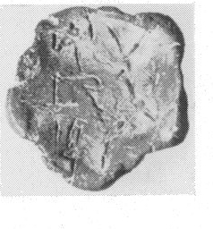
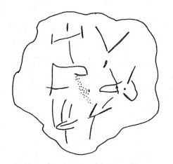

-
GOWc1a
Names
GOWc1a, GO Wc 1a
Support
Roundel
Location
Gournia
Findspot
Unavailable


Scribe
Unavailable
Context
Unavailable
Dimensions
Catalogue
Readings
1 1 0 A none
1 1 0 SA none
2 1 0 SU none
2 1 0 MA none
3 1 0 I none
3 1 0 SE none
𐘇𐘞
𐘲𐙁
𐘚𐘈
ASA
SUMA
ISE
𐘇𐘞𐘲𐙁𐘚𐘈
ASASUMAISE
GO Wc 1
(HM 83) (GORILA II: 2; Hallager 1996a,
Roundel
2: 11), from House Cf 25, "one of the older houses on the eastern slope of the hill;
this area, Quarters C and D, probably went out of use after an LM IA
destruction" (Weingarten,
Aegaeum
5, 109-110, n. 30, citing Hood & Betancourt, both in
Thera and the Aegean World
, 1978, 685-86 and 384, respectively). Hallager (
Aegaeum
5, p. 127) notes that the number
5
written after the logogram corresponds to the number of impressions (cf. HT Wc 3024), implying that, on roundels, the number of impressions probably corresponds to the number of commodities involved in the transaction.
|
statement
|
logogram
|
number
|
no. of
impressions
|
CMS
II, 6
no.
|
|
a: A-SA-
SU
-MA-I-
SE
|
b:
BOSm
|
5
|
5
|
159: bull
left
|
The clay is a gray buff, probably local.
Commentary © John Younger
References